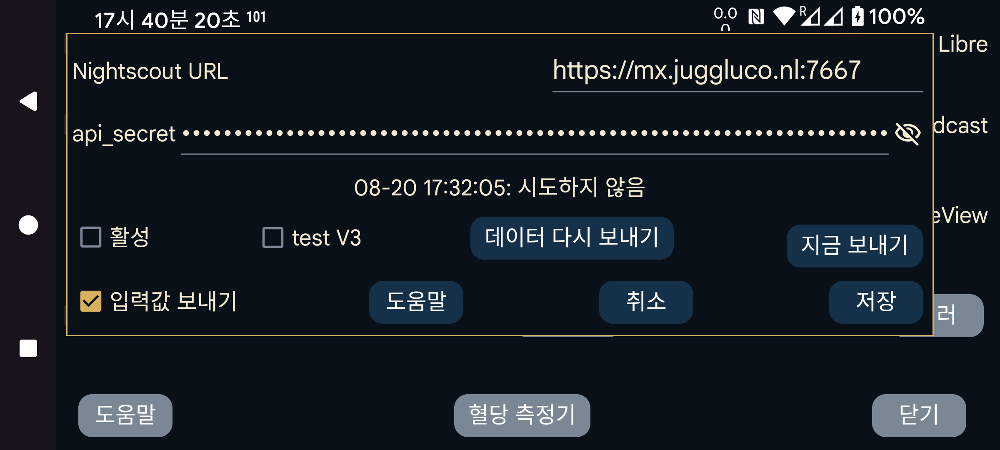

ar be de es fr hi it ja ko nl pl ru sv tr uk uz zh en
대부분의 경우 Juggluco의 웹 서버 또는 juggluco-server도 사용할 수 있습니다. Nightscout 웹 페이지만 표시하는 일부 앱에만 cgm-remote-monitor가 필요합니다. Juggluco 7.4.1부터는 Juggluco의 웹 서버를 AAPS 및 AAPSClient와 함께 사용할 수도 있습니다.
모든 스트림 값은 도착하는 즉시 Nightscout 서버로 업로드됩니다. 여러 센서를 사용하면 각 센서의 모든 값이 업로드됩니다. 일부 Garmin 워치 앱/워치 페이스/위젯은 값의 간격이 5분이라고 가정합니다. 1분 간격의 혈당 값을 받으면 곡선의 마지막 5분의 1만 표시합니다. 따라서 Juggluco에 내장된 웹 서버는 "interval=secs"가 더 작은 값으로 설정되지 않은 한 값을 5분 간격으로 제공합니다.
URL: URL은 https://호스트이름:포트 형식이어야 합니다. 예: https://myname.herokuapp.com:6789
활성: 업로더를 켭니다.
V3 테스트: Juggluco가 api/v3를 사용하여 Nightscout에 업로드하게 합니다. 이전에 V1 업로드를 받은 Nightscout 서버에는 사용하지 말고, 이전에 V3 업로드를 받은 Nightscout 서버에는 V1 업로드를 보내지 마십시오. api_secret 대신 다음을 지정해야 합니다: 액세스 토큰 치료와 entries를 업로드할 권한이 있어야 합니다. Nightscout 웹 인터페이스의 Admin Tools에서 만들 수 있습니다. ("테스트"라고 부르는 이유는 다른 V3 업로더가 없기 때문입니다. 일반적으로 V1을 사용합니다.)
입력값 제공: 입력값도 treatments로 Nightscout에 보냅니다. 확인란을 누르면 각 레이블이 Nightscout에서 무엇을 의미하는지 지정하는 대화상자가 열립니다. 이 설정은 Juggluco의 웹 서버(왼쪽 메뉴→설정→데이터 교환→웹 서버)와 공유됩니다. 모든 레이블에 대한 처리가 지정된 경우에만 "입력값 제공"을 선택할 수 있습니다. 나중에 새 레이블을 추가하면 그 레이블을 어떻게 처리할지 직접 지정해야 한다는 점을 기억해야 합니다. 다음의 버그 때문에 Nightscout과거 시간대에 삽입하거나 삭제한 항목은 새로운 시간의 항목이 추가된 뒤에야 표시됩니다. 따라서 Nightscout로 보내는 빈도를 낮추는 편이 좋습니다. 현재는 사용자가 화면을 끄거나 다른 앱으로 이동하여 Juggluco를 벗어날 때마다 전송합니다.
데이터 다시 보내기: 모든 데이터를 Nightscout 서버로 다시 업로드합니다.
지금 보내기: 일반적으로 데이터는 센서 또는 미러 연결에서 도착하는 즉시 전송됩니다. 이전 전송 시도가 어떤 이유로 실패했을 때 이 버튼을 누르십시오.
WearOS용 Juggluco 4.15.0 이상도 혈당 값을 Nightscout에 업로드할 수 있습니다. 거의 모든 경우 휴대폰이나 태블릿의 Juggluco 또는 컴퓨터의 Juggluco server를 통해 보내는 편이 낫습니다. 특히 Nightscout 서버에 연결할 수 없을 때 배터리가 많이 소모되므로 신뢰할 수 있는 연결이 없으면 활성 을 끄는 것이 좋습니다.
두 가지 오류 메시지가 자주 혼동을 일으킵니다.
오류 메시지가 "upload failure:"이고 콜론 뒤에 아무것도 없으면 가능한 원인은 다음과 같습니다:
네트워크 연결이 꺼져 있습니다;
호스트 이름의 철자가 틀렸습니다.
upload failure: java.io.FileNotFoundException: NIGHTSCOUTURL/api/v1/entries
여기서 NIGHTSCOUTURL은 "Nightscout URL" 뒤에 입력한 서버 URL을 뜻합니다.
다음 중 하나가 원인입니다:
URL이 잘못된 사이트를 가리킵니다. 예를 들어 호스트 이름 뒤의 포트가 빠져 Juggluco가 일반 웹 서버에 연결하는 경우입니다;
api_secret이 잘못되었습니다;
NIGHTSCOUTURL에 없어야 할 경로가 들어 있습니다. 예를 들어 Nightscout URL이 https://ahost.org:8887 인데 https://ahost.org:8887/extra를 입력한 경우입니다.